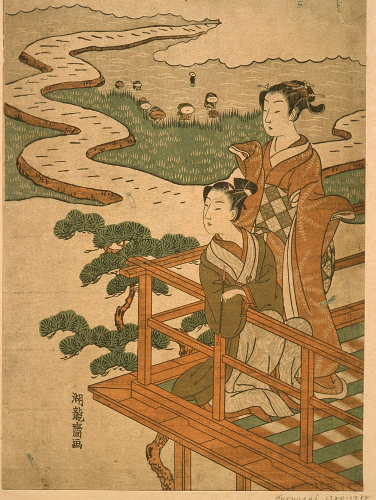

スパイラルダイナミクス › 6 / 7
緑の段階
お金を追いかけて、手に入れて、それでも空っぽだった。ほしかったのは物ではなく、人とのつながりだった。分かち合い、共感、平等、地球。この理論が「緑」と呼ぶのは、成功の段階のあとに来る、心が開く段階です。どんな条件から生まれ、何を大事にし、健全なときと行きすぎたときにどう見えるか。世界の大人の一割ほどがここにいると言われる段階の、いまの自分の中にある形、次の「黄」への壁、そして日本の「ボランティア元年」と「場の空気」との重なり。

お金を追いかけて、手に入れて、それでも空っぽだった。大きな家も、車も、肩書きも、思っていたほど自分を満たさなかった。「これで全部なのか」。そう問いはじめたとき、ほしかったのは物ではなく、人とのつながりだったと気づく。この理論が「緑」と呼ぶのは、その気づきから開く価値観のまとまりです。この理論を紹介する動画は、この段階に「相対主義、思いやり、共同体、環境」という題を付け、ひとことにするなら「平和」か「愛」だ、と言っています。
読む前に、序論で書いたことを繰り返します。段階は格付けではありません。緑は「やさしい人」の色でも「甘い人」の色でもなく、ある条件のもとで人の心が出した答えの形です。そして動画は、この段階を「先進国に住む人の多くが、いまいるあたり」だと言い、「都市に住み、大学を出た人なら、半分が橙、半分が緑、というのがふつう」だと見立てています。
どんな段階か
緑は、その前の段階「橙」の限界から生まれる、と説明されています。橙は、個人の成功と科学と豊かさを追う段階です。「橙は、資本主義と物質主義と合理主義を頂点まで持っていく。そうすると、いやな限界が見えてくる。お金と工場と株式市場を増やしても、世界の問題は解けない」。
個人の中では、それはこう起きます。「成功は手に入れた。でも、まだ穴がある。追いかけていたのは、追いかけるべきものではなかった。人生は物ではなく、人だ。関係だ。深い結びつきだ」。競争にも疲れてくる。「食うか食われるかの世界は、体にも悪い。みんなで協力したほうが賢いのではないか」。そこで「わたし」から「わたしたち」へ、振り子がもう一度、他者の側へ揺れます。青も他者のための段階でしたが、青の共同体が「自分の文明」だったのに対して、緑の共同体は、人種も国も越えた、世界のすべての人です。
動画はもうひとつ、体の側からの入口も挙げています。「橙は働きすぎて、有害な食べ物と環境の中で燃え尽き、病気になることがある。そこで、少し力を抜こう、子どもと動物園に行こう、と思う。それも緑への入口です」
動画は、緑が大事にする言葉を長く並べています。愛、心、魂。共感、親密さ、やさしさ、慈悲。人間らしさ。平等——性別の、人種の、経済の平等。民主主義。反物質主義、反消費、反貪欲。社会的な良心、人道の活動、抗議。「生きて、生かす」。多様性と多文化。序列を平らにすること。どの文化も自分の文化より劣ってはいない、という相対主義。関係と絆。平和主義。共通の土台を探すこと。調和。温かいやりとり、抱擁。全員の合意。感受性と女性性。チームワーク、対話、感情を分かち合うこと。意識の変性状態への関心。宗教ではない形の、共同体の精神性。自然、生態、持続可能性、リサイクル。弱い者を守り、踏みつけられた者を助けること。資源の再分配。誰も除け者にしないこと。寛容と開かれた心。競争より協力。動物、子ども、障害のある人、少数者。金のためではない芸術。師と仰ぐ人。涙と、弱さをさらす感情。論理より直観。健康な食べ物。
「この言葉を並べて緑の人に語りかければ、その人は『人生とはこれのことだ』と感じる」。そして動画は、ここで一つ、癖に触れています。「緑の人どうしが抱き合うのを見て落ち着かないなら、あなたは橙です。人の温もりに慣れていないだけで、それは乗り越えるべきものです」
橙が「できる、わたし」だったのに対して、緑は「受け入れる、わたしたち」です。冷たい合理性より、感情と思いやりが上に来る。成長は、一人でするものではなく、共同体と一緒にするもの。決めるときは、上から命令が降りてくるのではなく、話し合って、全員の合意を作る。だから時間がかかる。目標は、四半期の利益のような数字ではなく、幸せや愛や平和のような、柔らかい言葉で立てる。「これが橙を苛立たせる。橙は、愛が目標だと言われても、計算できない」。
内側の作業も、橙とは向きが違います。「橙の自己啓発は、成功のために技能を磨くものだった。緑の自己啓発は、自分の感情と影にもっと気づき、もっと思いやりのある人間になるためのもの」。そして、橙の世界観では相手にされなかったもの——魂、生まれ変わり、東洋の思想、ヨガ、気、直観、代替医療、水晶、地球を生きものとして見ること——が、緑では受け入れられます。「緑はこれらを愛する。そして、たいてい、やりすぎる。ニューエイジのヒッピー、という型は、そこから来ている」
どこに現れるか
動画は、百を超える例を挙げています。話し手の見立てとして、いくつかを引きます。
・1960年代の対抗文化、ヒッピー、ニューエイジ、平和運動、菜食、環境団体、動物の権利
・支援団体、非営利団体、国際的な医療の団体、社会福祉、地域の組織者、生活協同組合、モンテッソーリの学校
・話し手が挙げる政治の側の例は、欧米の進歩派と、北欧の国々です。「北欧の国々は、おおむね、とてもよく機能している。医療、平等、育児休暇。橙や青の国より、多くの面でうまくいっている」
・企業では、社員に食堂や託児を用意し、「悪になるな」を標語に掲げたような会社。「半分が橙、半分が緑」
・ヨガ教室、レイキ、瞑想の集まり、農産物の市場、自然食品の店、無添加、フェアトレード。「ただし、これらの多くは、橙の消費と緑の理想が混ざったもので、ヨガは伸びる体操になり、悟りという言葉は忘れられている」
・そして、心理療法、人間性心理学、トランスパーソナル心理学、ライフコーチ、看護師、教師
動画は、世界の大人のおよそ一割が緑にいて、西ヨーロッパとアメリカでは三割まで、文化的な影響力のおよそ一割五分を緑が占める、という数字を挙げています（動画が依拠した資料の推計で、学術的な統計ではありません）。緑の統治の形は「人間中心の、平らな、分散した、社会主義と資本主義の混合」で、青がいちばん嫌うものだ、とも。「青は自分の伝統と国の輪郭を守りたい。緑の『世界はひとつ』は、青にとって、自分が溶けてなくなることに見える」。
話し手は、ここで長く脇道に入って、緑を「新しいマルクス主義者」と呼ぶ論者への反論をしています。「ソ連や初期の中国の社会主義は、教条的で階層的な青の社会主義だった。緑の社会主義は、私有財産を没収したいわけではない。二つを混ぜて怪物を作ると、青と橙の人は、通らなければならない緑を憎むようになり、そこで止まってしまう」。これは話し手の政治的な見立てで、この理論の一部ではありません。ただ、「上の段階を悪魔にすると、そこを通れなくなる」という指摘は、この理論の骨組みからそのまま出てくるもので、序論の「隣の段階を、ばか、狂っている、犯罪的、と見る」と同じことを、反対の向きから言っています。
いまの自分の中にあるもの
緑が反応する「引き金」の一覧を読むと、自分の中の緑の量が見えます。
不正と不平等。少数者への抑圧。古くて不公平な序列。宗教を使って抑圧を正当化すること。人権の侵害、人種差別、偏見。歯止めのない資本主義——安全でない薬を売る会社、薬の値段を五倍にする会社。搾取、途上国の工場。環境破壊と汚染。共感のなさ、冷たさ。動物への残酷さ。戦争、虐殺、拷問、銃乱射、貧困。人を輪から締め出すこと。「緑は感じやすいので、引き金が多い。でも、青の原理主義者を怒らせるのはもっと簡単だし、橙も橙の引き金を持っている。反応するのは、緑だけの性質ではない」
動画は、青や橙の側の、ある癖にも触れています。「緑を怒らせるために、わざと残酷なこと、醜いことを言う。それはできる。でも、それをしているあいだ、自分を青と橙に深く沈めているだけで、通らなければならない緑に、心を開いていない」
どの段階も、行きすぎると毒になる、と動画は言います。緑が行きすぎると、傷つきやすくなりすぎる。心はあるが、頭が足りない——気持ちはあるのに、計画と規律がなく、話し合いと合意だけで結果が出ない。群れの心理に流され、いつのまにか窓を割る側にいる。橙を悪魔にして、「企業さえなくなればすべて解決する」と思う。「緑は橙の上に建っている。橙を消すのではなく、含んで、超える段階です」。
下の段階の必要が見えなくなることもあります。「基本の役所も仕事もワクチンもない土地に、動物の権利と世界平和を持ち込んでも、根づかない。人を、その人のいる場所で迎えること。自分のいる場所ではなく」。相対主義が行きすぎると、「すべての文化は同じ」と言って、違いを認めなくなる。素朴な平和主義。序列を平らにしすぎて、決める人がいなくなる。信じすぎて、赤に利用される。共感が搾取され、踏み台になる。相手を傷つけたくなくて、本当のことが言えない。世話をしすぎて燃え尽きる。そして、緑の罪悪感。「ごみを分別しなかった、ガソリン車に乗った、大企業に勤めている。青の罪悪感が戒律への罪悪感だとすれば、緑の罪悪感は理想への罪悪感で、どちらも人から力を奪う」。
話し手が「いちばん大きい」と言うのは、これです。「緑は精神性について語るのが好きだが、体現できないことがある。ヨガ教室に行き、師の話を聞き、愛について語る。でも、本当に心が開くには、規律のある深い実践がいる。その規律は青の強みだったもので、緑はそれを置いてきてしまった」。
一方で、健全な緑は、看護師、社会福祉士、教師、地域の組織者、災害のあとに集まる人々です。動画は、緑が育てた社会——北欧の国々、大学の文化、非営利の活動——を「おおむね、とてもよく機能している」と評価し、それを「緑を怪物として描く人たちへの反証」と呼んでいます。
「愛はすべてに勝つ」「分かち合いは思いやり」「戦争ではなく愛を」「みんな平等」「誰もがそれぞれに美しい」「誰もがそれぞれに正しい」「わたしたちはみな、同じ船に乗っている」「生きて、生かす」「仲良くできないのか」。この言葉を聞いて、胸が温かくなるか、少し身構えるか。それが、自分の中の緑の量の目安になります。
次の段階への壁
次の段階は「黄」で、序論で書いた「第二層」の最初の段階です。「黄は、はじめて、自分が段階の一つにいることに気づく段階」で、世界を、視点の集まりとして、仕組みとして見ます。緑から見ると、黄は冷たく見えます。「緑は、黄が社会の問題に十分に情熱を持っていないと感じる。黄は中立すぎる、と。緑は抗議に行きたい。黄は、行く前に、仕組みを考え抜こうとする」。
・緑について深く読み、限界を知る。黄について読み、緑との違いを見分ける
・橙と青と黄を裁くのをやめる。企業を、お金を、保守の人を、宗教を、悪魔にするのをやめる。「分極化そのものが、社会を膠着させている」
・社会の問題を、それほど気にかけなくなる。「大事ではある。でも同時に、社会はいまの速さで進んでいて、それでよい、という反対側も見る」
・政治もまた、エゴだと気づく。「集団のエゴという形をとった、より良いエゴ。それでも、内側の作業から目をそらす赤い鰊（にしん）になる」
・下の段階の視点から世界を見る。「なぜ青は青なのか、橙のどこが正当なのか、なぜ人はすぐには緑になれないのか」。すべての視点に、部分的な真実があると見はじめること。それが黄へ運ぶ
・自分がどれほど恵まれていたかを認める。「世界の大多数は、先進国に生まれず、大学に行かず、進歩的な学校にも通わなかった。教育は発達と強く結びついている。だから、人を『閉じている』『悪い』と責めても、変わらない」
・憎む人を憎むのをやめる。「緑は、不寛容に対して不寛容です。それは、不寛容とは何か、無知とは何か、なぜ争いが起きるのかを、まだ深く見ていないから」。動画は、これを「いちばん反直観的で、いちばん難しい」と言っています
・仕組みの思考（システム思考）を学ぶ。「黄は、仕組みの言葉で問題を解く。緑の行動は、騒がしいわりに、たいてい変わらない」
・緑の偽善を認める。「石油会社を責めながら、角のスタンドで給油する。企業の献金を責めながら、その企業から給料をもらう。あなたも仕組みの一部です」
・独りで、本気の瞑想と自己探求をする。集まりの中ではなく
・橙をきちんと通る。「緑で育った人は、橙の実務を飛ばしていることがある。事業を一つ始めてみると、なぜ企業があのように動くのかが、内側から分かる」
・そして、どの段階にも共通する鍵として、座って、考え、書き、自分の行いを振り返ること
動画は、急がないようにとも言っています。「緑を早く通り抜けろ、という話ではない。青緑がいちばん良い段階なのではなく、いちばん良い段階というものはない。いまが緑なら、数年、緑の中で、緑の本を読み、緑の祭りに行き、緑の人と友だちになる。ただし、黄に目を向けたまま。そうすると、自然に、次へ行きたくなる」。
日本語では
「共同体のために自分を抑える」という形は、日本ではもとから強いものです。ただ、この理論の言葉で見ると、それは青の共同体（家、会社、国）に近いもので、緑の共同体（見知らぬ他人、世界の誰でも）は、比較的あとから来ています。
日本では長いあいだ、「ボランティア」は、それを趣味にする人か、党派的な色のある人がする、特別なものと見られていました。それが変わったのが、1995年1月17日の阪神・淡路大震災です。それまでボランティアに関わってこなかった多くの市民が、災害の現場に入りました。この年は「ボランティア元年」と呼ばれます。流れは一過性で終わらず、1997年のナホトカ号の重油流出では海岸の清掃に人が集まり、1998年には、任意団体だったボランティア団体に法人格を与える「特定非営利活動促進法（NPO法）」ができました。
この理論の言葉で言えば、見知らぬ他人のために動く人が、特別な人から、ふつうの市民へ広がった年です。動画が緑の例として挙げる「非営利団体」が、日本で制度になったのは、そのあとのことでした。
一方で、緑の「全員の合意」「調和」には、日本にもとからある形があります。「空気を読む」です。ウィキペディアは、これを、対人関係や力関係など、言葉では明示されていない要素を察することだと説明し、心理学ではこの能力を社会的知能やEQ（心の知能指数）と呼ぶ、と書いています。動画が緑の価値として挙げた「感情の知能」は、日本ではずっと前から、技能として求められてきたものです。
ただ、同じ項目は、山本七平の『「空気」の研究』を引いて、反対の面も書いています。集団に蔓延する空気が意思決定を歪め、誤った方向へ事態を進める。だから「水を差す」ことが大事だ、と。これは、動画が緑の行きすぎとして挙げた「調和を求めすぎて、健全な個人を殺す」「群れの心理」と、そのまま重なります。緑の長所と短所が、日本語では「空気」という一つの言葉の表と裏になっています。
この理論の内側にも、緑をめぐる論争があります。ウィルバーとベックは「意地悪な緑のミーム」という言葉で、緑の行きすぎが上の段階への道を塞ぐと論じましたが、コーワンの協力者トドロヴィッチは、研究はその存在を裏づけない、と反論する論文を書いています。緑を批判する言葉も、緑を持ち上げる言葉も、この理論の中で決着していません。人に貼るのではなく、自分の中の緑を見るために使ってください。それも、「自分は思うより下にいる」という序論の注意つきで。
出典・参考
- Actualized.org, Spiral Dynamics - Stage Green（YouTube）段階の本質、生まれる条件、価値の一覧、例、引き金、行きすぎ、次へ進む方法。引用は自動生成の字幕による
- Spiral Dynamics（英語版ウィキペディア）段階は生活の条件への答えであり、それ自体として良くも悪くもないという理論の立場。「意地悪な緑のミーム」をめぐる論争
- ボランティア元年（ウィキペディア）1995年の阪神・淡路大震災と、1998年のNPO法
- 場の空気（ウィキペディア）空気を読むこと、山本七平の「空気の研究」、KY